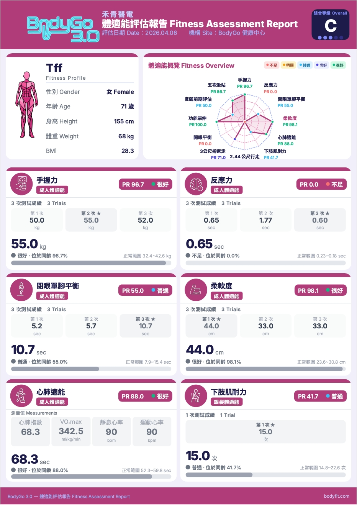
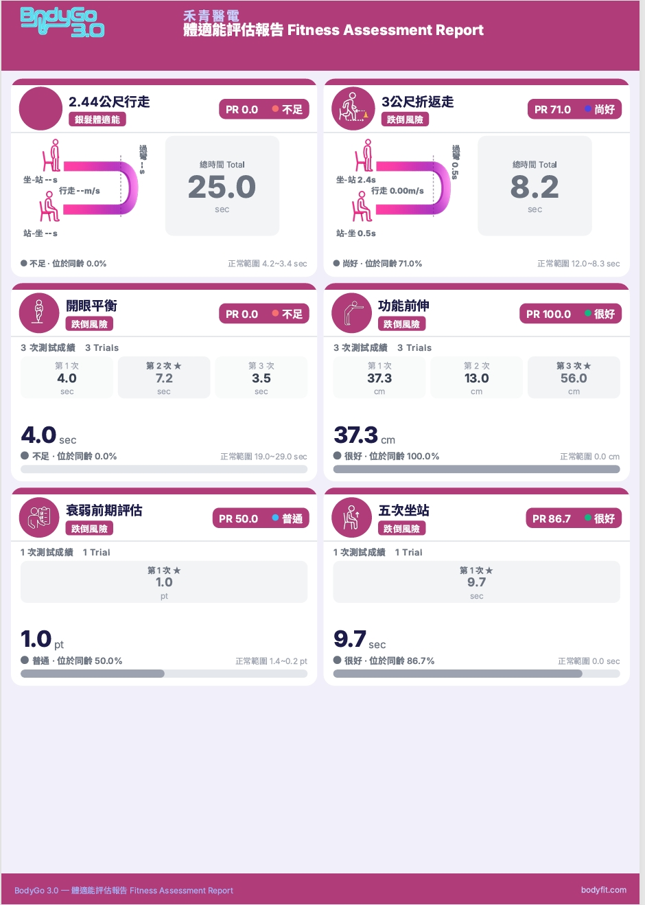

<!DOCTYPE html>
<html lang="zh-Hant">
<head>
<meta charset="utf-8"/>
<title>BodyGo 3.0 施測操作手冊</title>
<style>
@import url("https://fonts.googleapis.com/css2?family=Roboto:wght@300;400;500;700;900&display=swap");
:root{
  --bg:#060d1c;--panel:#0b1629;--card:#0d1a2e;--card2:#0f1f35;
  --border:#1a2d4a;--border2:#233655;
  --text:#dde8f5;--sub:#6b8cad;--sub2:#4a6a8a;
  --cyan:#00d4f0;--green:#00e87a;--orange:#ff7043;--purple:#9b5cf6;
  --yellow:#f5c842;--white:#ffffff;
  --w:1080px;
  --r:14px;
}
*{box-sizing:border-box;margin:0;padding:0;}
html{background:#030810;scroll-behavior:smooth;}
body{
  width:var(--w);margin:0 auto;
  background:var(--bg);color:var(--text);
  font-family:'Roboto','Microsoft JhengHei',system-ui,sans-serif;
  line-height:1.5;overflow-x:hidden;
}

/* ══ SCROLLBAR ══ */
::-webkit-scrollbar{width:5px;}
::-webkit-scrollbar-track{background:var(--bg);}
::-webkit-scrollbar-thumb{background:#1a3052;border-radius:3px;}
::-webkit-scrollbar-thumb:hover{background:#234070;}

/* ══ COVER ══ */
.cover{
  position:relative;width:100%;min-height:540px;
  padding:72px 64px 64px;overflow:hidden;
  background:linear-gradient(135deg,#040c1e 0%,#081428 40%,#0a1835 100%);
}
.cover-bg{
  position:absolute;inset:0;
  background:radial-gradient(ellipse at 70% 30%,rgba(0,212,240,.12) 0%,transparent 55%),
             radial-gradient(ellipse at 20% 80%,rgba(155,92,246,.10) 0%,transparent 50%);
  pointer-events:none;
}
.cover-grid{
  position:absolute;inset:0;
  background-image:linear-gradient(rgba(0,212,240,.04) 1px,transparent 1px),
    linear-gradient(90deg,rgba(0,212,240,.04) 1px,transparent 1px);
  background-size:60px 60px;pointer-events:none;
}
.cover-inner{position:relative;z-index:2;text-align:center;display:flex;flex-direction:column;align-items:center;}
.cover-logo-row{display:flex;align-items:center;justify-content:center;gap:16px;margin-bottom:40px;}
.cover-logo{height:132px;object-fit:contain;}
.cover-company{font-size:15px;font-weight:500;color:var(--sub);letter-spacing:.06em;}
.cover-eyebrow{
  font-size:12px;font-weight:700;letter-spacing:.2em;text-transform:uppercase;
  color:var(--cyan);margin-bottom:14px;
  display:flex;align-items:center;justify-content:center;gap:8px;
}
.cover-eyebrow::before{content:'';display:block;width:28px;height:2px;background:var(--cyan);}
.cover-h1{
  font-size:80px;font-weight:900;line-height:.95;letter-spacing:-.01em;white-space:nowrap;
  background:linear-gradient(135deg,#00d4f0 0%,#7eb8ff 45%,#9b5cf6 100%);
  -webkit-background-clip:text;-webkit-text-fill-color:transparent;
  margin-bottom:8px;
}
.cover-h2{font-size:30px;font-weight:300;color:var(--sub);margin-bottom:40px;}
.cover-cats{display:flex;gap:14px;flex-wrap:wrap;justify-content:center;margin-bottom:44px;}
.cover-cat{
  display:flex;align-items:center;gap:10px;padding:10px 20px;
  border-radius:50px;font-size:14px;font-weight:600;
  border:1px solid;transition:transform .2s;cursor:default;
}
.cover-meta{
  display:flex;gap:24px;padding-top:28px;justify-content:center;
  border-top:1px solid var(--border);width:100%;
  font-size:13px;color:var(--sub2);
}
.cover-meta span{display:flex;align-items:center;gap:6px;}

/* ══ SETUP ══ */
.setup{
  padding:56px 64px;
  background:linear-gradient(180deg,#060d1c 0%,#081224 100%);
  border-top:1px solid var(--border);border-bottom:2px solid var(--border2);
}
.section-eyebrow{
  font-size:11px;font-weight:700;letter-spacing:.2em;text-transform:uppercase;
  color:var(--cyan);margin-bottom:10px;
  display:flex;align-items:center;gap:8px;
}
.section-eyebrow::before{content:'';display:block;width:20px;height:2px;background:var(--cyan);}
.section-h{font-size:32px;font-weight:800;color:var(--white);margin-bottom:6px;}
.section-sub{font-size:14px;color:var(--sub);margin-bottom:32px;}
.setup-grid{display:grid;grid-template-columns:repeat(3,1fr);gap:14px;}
.setup-card{
  padding:20px 18px;border-radius:var(--r);
  background:var(--panel);border:1px solid var(--border);
  display:flex;gap:14px;
  transition:border-color .2s;
}
.setup-card:hover{border-color:var(--border2);}
.setup-icon{font-size:28px;flex-shrink:0;line-height:1;}
.setup-card h3{font-size:14px;font-weight:700;color:var(--white);margin-bottom:4px;}
.setup-card p{font-size:12px;color:var(--sub);line-height:1.6;}
.setup-warn{
  margin-top:20px;padding:14px 20px;border-radius:var(--r);
  background:rgba(245,200,66,.06);border:1px solid rgba(245,200,66,.2);
  font-size:13px;color:var(--yellow);line-height:1.65;
  display:flex;gap:12px;align-items:flex-start;
}

/* ══ CAT SECTION ══ */
.cat-section{border-bottom:3px solid var(--border2);}
.cat-banner{
  position:relative;padding:52px 64px 44px;
  overflow:hidden;
  border-bottom:1px solid var(--border);
}
.cat-banner-bg{
  position:absolute;inset:0;pointer-events:none;
}
.cat-banner-img-bg{
  position:absolute;right:-20px;top:50%;transform:translateY(-50%);
  height:240px;width:240px;object-fit:contain;
  opacity:.12;filter:saturate(0.3);
  pointer-events:none;
}
.cat-banner-inner{position:relative;z-index:2;display:flex;align-items:center;gap:36px;}
.cat-banner-icon-wrap{
  width:160px;height:160px;border-radius:20px;flex-shrink:0;
  display:flex;align-items:center;justify-content:center;
  border:2px solid;overflow:hidden;
  box-shadow:0 0 40px rgba(0,0,0,.5);
}
.cat-banner-icon-wrap img{width:100%;height:100%;object-fit:contain;padding:12px;}
.cat-num-label{
  font-size:11px;font-weight:700;letter-spacing:.2em;text-transform:uppercase;
  margin-bottom:8px;opacity:.7;
}
.cat-title{
  font-size:54px;font-weight:900;line-height:1;margin-bottom:10px;
  text-shadow:0 0 40px currentColor;
}
.cat-count{font-size:14px;color:var(--sub);margin-bottom:16px;}
.cat-chips{display:flex;flex-wrap:wrap;gap:7px;}
.cat-chip{
  padding:4px 13px;border-radius:20px;font-size:12px;font-weight:500;
  background:rgba(255,255,255,.05);border:1px solid rgba(255,255,255,.1);
}

/* ══ TEST CARDS ══ */
.tests-wrap{padding:28px 40px 8px;}
.test-card{
  border-radius:18px;
  background:linear-gradient(135deg,var(--card) 0%,var(--card2) 100%);
  border:1px solid var(--border);
  margin-bottom:28px;
  overflow:hidden;
  box-shadow:0 4px 24px rgba(0,0,0,.3);
  transition:border-color .25s,box-shadow .25s;
}
.test-card:hover{
  border-color:var(--border2);
  box-shadow:0 8px 32px rgba(0,0,0,.4);
}

/* card top accent bar */
.card-accent{height:3px;width:100%;}

/* card header */
.card-header{
  padding:20px 28px 18px;
  display:flex;flex-direction:column;gap:4px;
  border-bottom:1px solid var(--border);
  position:relative;
}
.card-header-row1{display:flex;align-items:center;gap:10px;}
.card-cat-badge{
  padding:3px 11px;border-radius:20px;font-size:10px;font-weight:700;
  border:1px solid;letter-spacing:.04em;flex-shrink:0;
}
.card-sensor{
  margin-left:auto;display:flex;align-items:center;gap:6px;
  padding:4px 12px;border-radius:20px;
  background:rgba(255,255,255,.04);border:1px solid var(--border);
  font-size:11px;color:var(--sub);white-space:nowrap;
}
.card-title{font-size:22px;font-weight:800;color:var(--white);line-height:1.2;}
.card-subtitle{font-size:13px;color:var(--sub);font-weight:400;}

/* card body */
.card-body{display:flex;border-bottom:1px solid var(--border);}

/* left column: thumb + ble device */
.card-left{
  width:240px;flex-shrink:0;
  border-right:1px solid var(--border);
  display:flex;flex-direction:column;
}
.thumb-box{
  flex:1;background:#040c18;
  display:flex;align-items:center;justify-content:center;
  min-height:140px;max-height:170px;overflow:hidden;
  border-bottom:1px solid var(--border);
}
.thumb-box img{
  width:100%;height:100%;object-fit:contain;
  padding:10px;
}
.ble-device-box{
  padding:12px;display:flex;flex-direction:column;align-items:center;
  gap:6px;background:rgba(0,0,0,.2);
}
.ble-device-img{
  width:100%;max-height:80px;object-fit:contain;
  border-radius:8px;
}
.ble-device-lbl{font-size:10px;color:var(--sub2);text-align:center;letter-spacing:.05em;}

/* right column: demo frames */
.card-right{
  flex:1;background:#060d1c;
  display:flex;flex-direction:column;
  min-width:0;
}
.demo-label{
  padding:7px 14px;font-size:10px;color:var(--sub2);
  text-transform:uppercase;letter-spacing:.1em;
  border-bottom:1px solid var(--border);
  background:rgba(255,255,255,.02);
  flex-shrink:0;
}
.card-right > img{
  width:100%;flex:1;object-fit:cover;display:block;
  min-height:200px;
}
.no-demo{
  flex:1;min-height:180px;
  display:flex;align-items:center;justify-content:center;
  color:var(--sub2);font-size:12px;
}
.frames-strip{
  display:flex;flex-wrap:nowrap;
  align-items:center;
  gap:6px;padding:10px;
}
.frame-item{
  flex:1 1 0;min-width:0;position:relative;
  display:flex;align-items:center;justify-content:center;
}
.frame-item img{
  max-width:100%;max-height:300px;
  width:auto;height:auto;display:block;
  border-radius:6px;
  filter:brightness(1.45) contrast(1.05);
}
.card-body.tall .frame-item img{
  max-height:375px;
}
.frame-num{
  position:absolute;top:6px;left:6px;
  background:rgba(0,0,0,.75);color:var(--cyan);
  font-size:11px;font-weight:800;padding:2px 8px;
  border-radius:10px;border:1px solid rgba(0,212,240,.35);
  pointer-events:none;
}

/* params strip */
.params-strip{
  display:flex;border-bottom:1px solid var(--border);
  background:rgba(0,0,0,.15);
}
.param-item{
  flex:1;padding:12px 10px;text-align:center;
  border-right:1px solid var(--border);
}
.param-item:last-child{border-right:none;}
.param-lbl{
  font-size:13px;font-weight:600;
  letter-spacing:.04em;color:var(--sub);margin-bottom:4px;
}
.param-val{font-size:14px;font-weight:700;color:var(--white);}

/* steps */
.steps-section{padding:22px 28px;}
.steps-title{
  font-size:11px;font-weight:700;text-transform:uppercase;
  letter-spacing:.12em;color:var(--sub);margin-bottom:14px;
  display:flex;align-items:center;gap:8px;
}
.steps-title::before{content:'';display:block;width:16px;height:2px;background:currentColor;}
.steps-list{list-style:none;display:flex;flex-direction:column;gap:7px;}
.steps-list li{
  display:flex;gap:12px;align-items:flex-start;
  padding:10px 14px;border-radius:9px;
  background:rgba(255,255,255,.025);
  border:1px solid var(--border);
  font-size:13px;color:var(--text);line-height:1.6;
}
.step-num{
  min-width:22px;height:22px;border-radius:50%;
  display:flex;align-items:center;justify-content:center;
  font-size:10px;font-weight:800;flex-shrink:0;margin-top:1px;
}
.note-box{
  margin:0 28px 22px;padding:12px 16px;border-radius:9px;
  background:rgba(245,200,66,.07);
  border-left:3px solid var(--yellow);
  font-size:12px;color:var(--yellow);line-height:1.65;
  display:flex;gap:8px;align-items:flex-start;
}

/* ══ REPORT SECTION ══ */
.report-section{
  padding:56px 64px 64px;
  background:linear-gradient(180deg,#060d1c 0%,#081224 100%);
  border-top:3px solid var(--border2);border-bottom:3px solid var(--border2);
}
.rp-grid{display:grid;grid-template-columns:1fr 1fr;gap:28px;margin-top:8px;}
.rp-card{
  border-radius:var(--r);overflow:hidden;
  background:var(--card);border:1px solid var(--border2);
  display:flex;flex-direction:column;
  box-shadow:0 8px 32px rgba(0,0,0,.4);
  transition:transform .2s,box-shadow .2s;
}
.rp-card:hover{transform:translateY(-4px);box-shadow:0 16px 48px rgba(0,0,0,.5);}
.rp-badge{
  padding:8px 20px;font-size:11px;font-weight:700;letter-spacing:.15em;
  text-transform:uppercase;color:var(--cyan);
  background:linear-gradient(90deg,rgba(0,212,240,.10) 0%,transparent 100%);
  border-bottom:1px solid var(--border);
}
.rp-img{width:100%;display:block;object-fit:cover;}
.rp-caption{
  padding:16px 20px;font-size:13px;color:var(--text);line-height:1.6;
  background:var(--panel);border-top:1px solid var(--border);
}
.rp-caption span{display:block;font-size:11px;color:var(--sub);margin-top:4px;}

/* ══ FOOTER ══ */
.page-footer{
  padding:44px 64px;text-align:center;
  border-top:1px solid var(--border);
  background:var(--panel);
  font-size:13px;color:var(--sub2);
}
.page-footer strong{color:var(--sub);display:block;margin-bottom:6px;font-size:15px;}

/* ══ PRINT ══ */
@media print{
  html,body{width:1080px;background:#fff;color:#111;}
  .test-card{page-break-inside:avoid;border:1px solid #ccc;box-shadow:none;}
  .cat-banner{page-break-before:always;}
}
</style>
</head>
<body>
<div id="root"></div>
<script>
const DEMO = 'DM/';
const IMG  = 'images/';
const DM   = 'DM/';

const BLE_DEVICE = {
  ble_grip:{ img:DM+'握力計.png',   name:'BLE 握力計' },
  ble_tape:{ img:DM+'health-tape.png', name:'BLE 健康捲尺' },
  ble_dist:{ img:DM+'測距.png',     name:'BLE 距離感測器' },
};

const CAT = {
  adult: {
    name:'成人體適能', en:'Adult Fitness',
    color:'#00d4f0', glow:'rgba(0,212,240,.18)', bg:'rgba(0,212,240,.08)', border:'rgba(0,212,240,.35)',
    icon:'🏃', img:IMG+'adult.png', gradient:'linear-gradient(135deg,#071e2e 0%,#0a1826 100%)',
  },
  senior:{
    name:'銀髮體適能', en:'Senior Fitness',
    color:'#00e87a', glow:'rgba(0,232,122,.18)', bg:'rgba(0,232,122,.08)', border:'rgba(0,232,122,.35)',
    icon:'🧓', img:IMG+'elder.png', gradient:'linear-gradient(135deg,#071e14 0%,#091a12 100%)',
  },
  fall:{
    name:'跌倒風險', en:'Fall Risk Assessment',
    color:'#ff7043', glow:'rgba(255,112,67,.18)', bg:'rgba(255,112,67,.08)', border:'rgba(255,112,67,.35)',
    icon:'⚠️', img:IMG+'fall.png', gradient:'linear-gradient(135deg,#1e0e07 0%,#1a0c06 100%)',
  },
  sppb:{
    name:'SPPB', en:'Short Physical Performance Battery',
    color:'#9b5cf6', glow:'rgba(155,92,246,.18)', bg:'rgba(155,92,246,.08)', border:'rgba(155,92,246,.35)',
    icon:'📊', img:IMG+'sppb.png', gradient:'linear-gradient(135deg,#100b1e 0%,#0e0919 100%)',
  },
};

const SENSOR = {
  ble_grip:{ icon:'🔵', label:'BLE 握力計' },
  ble_tape:{ icon:'📐', label:'BLE 健康捲尺' },
  ble_dist:{ icon:'📏', label:'BLE 距離感測' },
  vision:  { icon:'👁',  label:'AI 視覺辨識' },
  timer:   { icon:'⏱',  label:'人工計時' },
  quest:   { icon:'📋', label:'問卷評分' },
};

const TESTS = [
  // ─ 成人體適能 ─
  { cat:'adult', label:'心肺適能', sub:'三分鐘登階', sensor:'timer', tall:true,
    thumb:IMG+'adult/心肺適能.png', video:DEMO+'成人-心肺適能.webm',
    mode:'計時', unit:'秒', cards:1, cd:'30秒準備', direct:false,
    steps:['【前休息】受測者靜坐休息 1 分鐘，期間可佩戴心率錶等待靜息心率穩定',
           '【前休息】系統記錄靜息心率後，告知受測者即將開始登階',
           '【登階】受測者站在階梯前，說明動作要領：先上一腳至登階箱再上另一隻至登階箱，先上的腳再放下來，另一腳也放下來，跟上節拍',
           '【登階】按「開始」，系統播放節拍音，啟動三分鐘計時；全程觀察受測者步伐是否穩定',
           '【登階】若感到不適立刻按「停止」，仍可記錄已完成時間',
           '【後休息】登階結束後，受測者立即靜坐，系統開始記錄恢復心率（1\' / 2\' / 3\'）',
           '【後休息】三分鐘後系統自動計算心肺指數（Harvard Step Test 公式）並儲存結果'],
    note:'需準備高度約 20 cm 台階。受測者若提早停止仍可計算已完成時間的指數。整個流程約 7 分鐘（前休息 1 分＋登階 3 分＋後休息 3 分）。' },

  { cat:'adult', label:'反應力', sub:'', sensor:'timer',
    thumb:IMG+'adult/反應力.png', video:null, demoImg:DEMO+'reaction-time.png',
    mode:'計時', unit:'秒', cards:3, cd:'15秒準備', direct:true,
    steps:['受測者面向螢幕就位，系統自動開始（無需按開始鈕）',
           '螢幕由綠燈→黃燈→紅燈，紅燈時同步發出聲音',
           '受測者聽到聲音後立刻做出指定反應動作',
           '系統自動計算反應時間（秒）',
           '共測 3 次，系統依序自動進入下一卡'],
    note:'禁止提前反應（搶跑記為無效）。確保受測者全神貫注螢幕。' },

  { cat:'adult', label:'手握力', sub:'', sensor:'ble_grip',
    thumb:IMG+'adult/手握力.png', video:null, demoImg:DEMO+'handgrip.png',
    mode:'最大值', unit:'kg', cards:3, cd:'10秒', direct:true,
    steps:['BLE 握力計開機（電量不足時請先充電）；若無法連線請關機後重新開機',
           '受測者手臂自然下垂，握住握力計，手臂不靠身體',
           '聽到開始後用力握緊 1-2 秒再放鬆',
           '系統即時顯示握力值，自動記錄本張最大值',
           '任意手測 3 次，完成後系統自動切換至下一張'],
    note:'共 3 次，系統自動記錄每次最大值。' },

  { cat:'adult', label:'肌耐力', sub:'仰臥起坐', sensor:'vision',
    thumb:IMG+'adult/肌耐力.png', video:DEMO+'sit-up.webm',
    mode:'計次', unit:'次', cards:1, cd:'60秒', direct:true,
    steps:['受測者平躺地墊，屈膝約 90°，腳踩穩地面',
           '雙手放大腿兩側（不可抱胸），頭部自然放鬆',
           '核心發力坐起，雙手向前碰觸膝蓋後回到起始位置',
           '系統自動偵測並計次',
           '60 秒結束自動停止，記錄完成次數'],
    note:'攝影機需對準受測者，環境光線充足。計次有誤可手動調整。' },

  { cat:'adult', label:'柔軟度', sub:'坐姿體前屈', sensor:'ble_dist',
    thumb:IMG+'adult/柔軟度.png', video:DEMO+'sit-and-reach.webm',
    mode:'距離', unit:'cm', cards:3, cd:'30秒準備', direct:true,
    steps:['BLE 距離感測器開機；若無法連線請關機後重新開機',
           '受測者坐量測區，雙腿完全伸直，腳跟貼標線',
           '雙手疊放，緩慢向前推至最遠點，停留 1-2 秒不彈震',
           '系統偵測穩定停留 4 秒後自動記錄',
           '共測 3 次，取最佳值'],
    note:'測試前需校準感測器基準點。確認感測器無遮擋。' },

  { cat:'adult', label:'閉眼單腳平衡', sub:'', sensor:'timer',
    thumb:IMG+'adult/閉眼平衡.png', video:DEMO+'single-leg-stance-eyes-closed.webm',
    mode:'計時', unit:'秒', cards:3, cd:'60秒最長', direct:false,
    steps:['受測者站平坦安全地面，旁邊備椅子或扶手',
           '雙手抱胸，單腳抬起離地，再閉上眼睛',
           '倒數完畢，姿勢確認後按「開始」',
           '腳著地或明顯失衡時按「停止」',
           '共測 3 次取最佳值'],
    note:'安全第一！施測者必須站旁邊全程守護。高齡或平衡較差者改用開眼版。' },

  // ─ 銀髮體適能 ─
  { cat:'senior', label:'下肢肌耐力', sub:'30秒坐站', sensor:'vision', tall:true,
    thumb:IMG+'elder/下肢肌力.png', video:DEMO+'chair-stand-30s.webm',
    mode:'倒數計次', unit:'次', cards:1, cd:'30秒', direct:false,
    steps:['受測者坐椅前緣，腳與肩同寬踩穩，雙手抱胸',
           '倒數準備後按「開始」，30 秒計時啟動',
           '受測者在 30 秒內盡量完成站起→坐下的完整循環',
           '系統自動偵測並計次',
           '時間到自動停止，記錄完成次數'],
    note:'椅子高度適當（大腿與地面平行），需固定不移動。首次測試先示範一次。' },

  { cat:'senior', label:'上肢肌耐力', sub:'手持彎舉30秒', sensor:'vision', tall:true,
    thumb:IMG+'elder/上肢肌力.png', video:DEMO+'銀髮上肢肌耐力.webm',
    mode:'倒數計次', unit:'次', cards:1, cd:'130秒（含休息）', direct:false,
    steps:['受測者坐姿或站姿，手持啞鈴（女 2 kg／男 4 kg）',
           '手臂放鬆下垂，手肘靠近身側',
           '按「開始」後以穩定速度做手肘彎舉至肩膀高度再放下',
           '系統自動偵測並計次',
           '30 秒結束自動停止'],
    note:'確認攝影機能清楚看到手臂全程動作。' },

  { cat:'senior', label:'心肺適能', sub:'原地踏步兩分鐘', sensor:'vision',
    thumb:IMG+'elder/心肺適能.png', video:DEMO+'march-in-place-2min.webm',
    mode:'倒數計次', unit:'次', cards:1, cd:'120秒', direct:false,
    steps:['受測者站立，面向攝影機，雙腳與肩同寬',
           '依節拍音原地踏步，抬膝至建議高度（約髂前上棘）',
           '系統自動偵測左右膝抬起並計次',
           '兩分鐘結束，記錄總步數'],
    note:'需確認 AI 相機已啟動，受測者全身在畫面範圍內。' },

  { cat:'senior', label:'下肢柔軟度', sub:'椅上坐姿前屈', sensor:'ble_dist', tall:true,
    thumb:IMG+'elder/下肢柔軟度.png', video:DEMO+'chair-sit-and-reach.webm',
    mode:'距離', unit:'cm', cards:3, cd:'30秒準備', direct:true,
    steps:['受測者坐椅前緣，一腳伸直腳尖朝上，另一腳屈膝踩地',
           '雙手交疊，沿小腿向足背緩慢前伸至最遠點',
           '停留 1-2 秒，系統偵測穩定後自動記錄',
           '共測 3 次取最佳值'],
    note:'正值＝手超過腳尖（佳），負值＝未到腳尖。確認感測器位置正確。' },

  { cat:'senior', label:'上肢柔軟度', sub:'抓背測試', sensor:'ble_tape',
    thumb:IMG+'elder/上肢柔軟度.png', video:null, demoImg:DEMO+'back-scratch.png',
    mode:'最大值', unit:'cm', cards:3, cd:'—', direct:true,
    steps:['BLE 健康捲尺開機；若無法連線請關機後重新開機',
           '一手從肩上往背後下探，另一手從腰際往背後上伸',
           '施測者使用捲尺量測兩手指尖間距',
           'BLE 自動傳入數值或手動輸入',
           '共測 3 次取最佳值'],
    note:'正值＝兩手有重疊（較佳），負值＝兩手有距離。' },

  { cat:'senior', label:'2.44公尺折返走', sub:'', sensor:'timer', maxFrames:5,
    thumb:IMG+'elder/2.44公尺折返走.png', video:DEMO+'walk-2p44m.webm',
    mode:'計時', unit:'秒', cards:1, cd:'30秒準備', direct:false,
    steps:['地板標記起點（椅子前）與 2.44 公尺標記點',
           '受測者坐椅上，雙手放腿上準備',
           '施測者說「開始」並按計時鈕',
           '受測者起身走到標記點繞過後走回完全坐下',
           '受測者坐穩後按「停止」'],
    note:'走道需無障礙物。可讓受測者先練習一次（不計分）。' },

  { cat:'senior', label:'手握力', sub:'同成人體適能', sensor:'ble_grip',
    thumb:IMG+'elder/手握力.png', video:null, demoImg:DEMO+'handgrip.png',
    mode:'最大值', unit:'kg', cards:3, cd:'10秒', direct:true,
    steps:['BLE 握力計開機；若無法連線請關機後重新開機',
           '手臂自然下垂，握住握力計，手臂不靠身體',
           '聽到開始後用力握緊 1-2 秒再放鬆',
           '共測 3 次，自動記錄最大值'],
    note:'操作方式與「成人體適能－手握力」相同。' },

  // ─ 跌倒風險 ─
  { cat:'fall', label:'3公尺折返走', sub:'計時起身行走 TUG', sensor:'timer',
    thumb:IMG+'fall/3公尺折返走.png', video:DEMO+'3m-shuttle-walk.webm',
    mode:'計時', unit:'秒', cards:1, cd:'30秒準備', direct:false,
    steps:['椅子靠牆固定，前方 3 公尺處放錐筒',
           '受測者坐穩背靠椅背，雙手放腿上',
           '施測者說「開始」並按計時',
           '受測者起身走 3 公尺繞錐筒後走回完全坐下',
           '完全坐定後按「停止」，記錄時間'],
    note:'可使用輔具並備注。不可跑步。&lt;10秒=正常，&gt;14秒=高跌倒風險。' },

  { cat:'fall', label:'手握力', sub:'同成人體適能', sensor:'ble_grip',
    thumb:IMG+'fall/手握力.png', video:null, demoImg:DEMO+'handgrip.png',
    mode:'最大值', unit:'kg', cards:3, cd:'10秒', direct:true,
    steps:['BLE 握力計開機；若無法連線請關機後重新開機',
           '手臂自然下垂，握住握力計，手臂不靠身體',
           '聽到開始後用力握緊 1-2 秒再放鬆',
           '共測 3 次，自動記錄最大值'],
    note:'操作方式與「成人體適能－手握力」相同。' },

  { cat:'fall', label:'開眼平衡', sub:'單腳站立', sensor:'timer',
    thumb:IMG+'fall/開眼平衡.png', video:DEMO+'eyes-open-balance.webm',
    mode:'計時', unit:'秒', cards:3, cd:'60秒最長', direct:false,
    steps:['受測者站平坦安全地面，施測者在旁守護',
           '受測者雙手抱胸，單腳抬起，眼睛睜開',
           '姿勢確認後按「開始」',
           '腳著地或重心明顯偏移時按「停止」',
           '共測 3 次取最佳值'],
    note:'高齡者從開眼版開始評估。旁邊備好扶手（不可實際使用）。' },

  { cat:'fall', label:'功能前伸', sub:'功能性前伸測試', sensor:'ble_dist', tall:true,
    thumb:IMG+'fall/功能性伸展.png', video:DEMO+'functional-reach.webm',
    mode:'距離', unit:'cm', cards:3, cd:'30秒準備', direct:true,
    steps:['受測者站立，手臂抬至肩膀高度與地面平行（握拳）',
           '系統自動記錄起始位置',
           '雙腳不移動，身體盡量向前傾伸手至最遠點',
           '停留 1-2 秒，系統自動記錄最大前伸距離',
           '共測 3 次，取最大值'],
    note:'感測器需面向受測者手部，無遮擋。&lt;10cm=高跌倒風險，25-35cm=正常。' },

  { cat:'fall', label:'5次坐站', sub:'五次坐站計時', sensor:'vision', tall:true,
    thumb:IMG+'fall/五次坐站.png', video:DEMO+'sit-to-stand-5x.webm',
    mode:'計時', unit:'秒', cards:1, cd:'60秒最長', direct:false,
    steps:['受測者坐椅前緣，雙手抱胸，腳踩穩地面',
           '連續站起坐下 5 次，越快越好',
           '倒數後按「開始」，計時啟動',
           '5 次全部完成後按「停止」',
           '記錄完成 5 次所需秒數'],
    note:'&lt;11秒=正常，&gt;16秒=功能受損。若 60秒 未完成記錄為超時。' },

  { cat:'fall', label:'小腿圍', sub:'', sensor:'ble_tape',
    thumb:IMG+'fall/小腿圍.png', video:null, demoImg:DEMO+'calf-circumference.png',
    mode:'最大值', unit:'cm', cards:3, cd:'—', direct:true,
    steps:['受測者站立或坐姿，小腿自然垂直，肌肉放鬆',
           '使用健康捲尺環繞小腿最粗位置量測',
           'BLE 自動傳送測量值至系統',
           '左右小腿各測，取較大值'],
    note:'男 &lt;31cm 或 女 &lt;30cm 可能有肌肉量流失風險。' },

  { cat:'fall', label:'衰弱前期評估', sub:'問卷評分', sensor:'quest',
    thumb:IMG+'fall/衰弱前期問卷.png', video:null, demoImg:DEMO+'prefrailty-survey.png',
    mode:'評分', unit:'pt', cards:1, cd:'—', direct:true,
    steps:['施測者向受測者逐一說明每道題目',
           '共 2 題：①體重減輕（過去一年非刻意減重 ≥3kg 或 ≥5%）、②精力降低（感到疲憊或精力不足）',
           '每題「是」得 1 分，「否」得 0 分',
           '2 題完成後系統計算總分並顯示結果'],
    note:'0=強健、1=衰弱前期、2=衰弱。問卷僅供參考，需配合臨床評估。' },

  // ─ SPPB ─
  { cat:'sppb', label:'SPPB 平衡測試', sub:'三種站姿計時', sensor:'timer',
    thumb:IMG+'sppb/平衡測試.png', video:null, demoImg:DEMO+'sppb-balance.png',
    mode:'計時', unit:'秒', cards:1, cd:'每姿勢最長10秒', direct:false,
    steps:['依序進行三種站姿：①並腳站  ②半前後腳站  ③全前後腳站',
           '每姿勢最長維持 10 秒，失去平衡時即停止',
           '施測者確認姿勢正確後按「開始」，失衡時按「停止」',
           '若②姿勢未達 10 秒，跳過③直接記 0 分',
           '系統換算 SPPB 平衡分數（0-4 分）'],
    note:'並腳滿=1分，半前後滿=1分，全前後 &lt;3秒=0分、3-9.99秒=1分、10秒=2分。滿分 4 分。' },

  { cat:'sppb', label:'SPPB 4公尺行走', sub:'步速測試', sensor:'timer',
    thumb:IMG+'sppb/4公尺行走.png', video:DEMO+'ppb-gait-4m.webm',
    mode:'計時', unit:'秒', cards:1, cd:'30秒準備', direct:false,
    steps:['地板標記起點與 4 公尺終點（起點前需有助跑區）',
           '受測者從起點以安全最快速度步行至終點',
           '計時從第一步踏出到通過 4 公尺終點線',
           '可測 2 次，取最快一次',
           '系統換算步速（m/s）並轉換 SPPB 分數'],
    note:'≥0.8m/s=4分，≥0.6=3分，≥0.4=2分。受測者可正常使用輔具。' },

  { cat:'sppb', label:'SPPB 5次坐站', sub:'下肢肌力測試', sensor:'vision', tall:true,
    thumb:IMG+'sppb/五次坐站.png', video:DEMO+'sit-to-stand-5x.webm',
    mode:'計時', unit:'秒', cards:1, cd:'60秒最長', direct:false,
    steps:['受測者坐椅前緣，雙手抱胸，腳踩穩（操作同「5次坐站」）',
           '連續完成 5 次站起坐下，越快越好',
           '從第一次站起計時到第五次完全站直',
           '若 60 秒未完成記錄為超時（0 分）',
           '系統換算 SPPB 分數（0-4 分）'],
    note:'&lt;11.19秒=4分，&lt;13.69秒=3分，&lt;16.69秒=2分，≤60秒=1分。SPPB 總分最高 12 分，&lt;9分建議進一步評估。' },
];

// ════════ HELPERS ════════
function mk(tag, cls){
  const d = document.createElement(tag);
  if(cls) d.className = cls;
  return d;
}
function html(el, str){ el.innerHTML = str; return el; }

const root = document.getElementById('root');

// ════════ COVER ════════
const coverEl = mk('div','cover');
coverEl.innerHTML = `
<div class="cover-bg"></div>
<div class="cover-grid"></div>
<div class="cover-inner">
  <div class="cover-logo-row">
    
    <span class="cover-company">禾青醫電 HEQING MEDICAL</span>
  </div>
  <div class="cover-eyebrow">Operator Manual</div>
  <div class="cover-h1">施測操作手冊</div>
  <div class="cover-h2">BodyGo 3.0 體適能評估系統</div>
  <div class="cover-cats">
    ${Object.entries(CAT).map(([k,c])=>`
      <div class="cover-cat" style="background:${c.bg};border-color:${c.border};color:${c.color}">
        <span style="font-size:20px">${c.icon}</span>
        <span>${c.name}</span>
      </div>`).join('')}
  </div>
  <div class="cover-meta">
    <span>📋 共 ${TESTS.length} 個測項</span>
    <span>📅 2026年版</span>
    <span>🔒 施測人員專用</span>
  </div>
</div>`;
root.appendChild(coverEl);

// ════════ SETUP ════════
const setupEl = mk('div','setup');
setupEl.innerHTML = `
<div class="section-eyebrow">Pre-Test Checklist</div>
<div class="section-h">測前準備</div>
<div class="section-sub">每次測試前請依序確認以下所有項目</div>
<div class="setup-grid">
${[['🖥','後端服務啟動','在桌面點擊 BodyGo 3.0 開始運行本系統'],
   ['📷','相機連線確認','當等候許久不見首頁畫面，請確認相機 USB 已插好，再重新點擊桌面 BodyGo 3.0'],
   ['📍','場地距離標記','依測項在地板標記所需距離（3公尺、4公尺等）'],
   ['🪑','器材備妥','椅子固定、啞鈴、地墊等依測項事先準備齊全'],
].map(([i,t,d])=>`
  <div class="setup-card">
    <span class="setup-icon">${i}</span>
    <div><h3>${t}</h3><p>${d}</p></div>
  </div>`).join('')}
</div>
<div class="setup-warn">
  <span style="font-size:18px;flex-shrink:0">⚠</span>
  <span>受測者若有心臟病、高血壓、骨骼肌肉傷病或近期手術，測試前請先諮詢醫師。施測過程中隨時注意受測者狀況，如有任何不適立即停止並做記錄。</span>
</div>`;
root.appendChild(setupEl);

// ════════ CATEGORIES & TEST CARDS ════════
const cats = [...new Set(TESTS.map(t=>t.cat))];

cats.forEach(catKey => {
  const c = CAT[catKey];
  const tests = TESTS.filter(t=>t.cat===catKey);
  const sec = mk('div','cat-section');

  // Banner
  const banner = mk('div','cat-banner');
  banner.style.background = c.gradient;
  banner.innerHTML = `
    <div class="cat-banner-bg" style="background:radial-gradient(ellipse at 80% 50%,${c.glow} 0%,transparent 60%)"></div>
    
    <div class="cat-banner-inner">
      <div class="cat-banner-icon-wrap" style="border-color:${c.border};background:${c.bg}">
        
      </div>
      <div class="cat-banner-info">
        <div class="cat-num-label" style="color:${c.color}">${c.icon} 評估類型</div>
        <div class="cat-title" style="color:${c.color}">${c.name}</div>
        <div class="cat-count">${tests.length} 個測項</div>
        <div class="cat-chips">
          ${tests.map(t=>{
            const sub = t.sub && !t.sub.includes('同') ? ' · '+t.sub : '';
            return '<div class="cat-chip" style="border-color:'+c.border+';color:'+c.color+'">'+t.label+sub+'</div>';
          }).join('')}
        </div>
      </div>
    </div>`;
  // fix: cat-banner-inner class needs to exist on the div
  const bannerInner = banner.querySelector('.cat-banner-inner');
  if(bannerInner) bannerInner.className = 'cat-banner-inner';
  sec.appendChild(banner);

  // Tests wrap
  const tw = mk('div','tests-wrap');

  tests.forEach(t => {
    const s = SENSOR[t.sensor] || {icon:'❓',label:'未知'};
    const card = mk('div','test-card');

    // Top accent bar
    const accent = mk('div','card-accent');
    accent.style.background = 'linear-gradient(90deg,'+c.color+','+c.color+'44)';
    card.appendChild(accent);

    // Header
    const header = mk('div','card-header');
    const subText = t.sub && !t.sub.includes('同') ? t.sub : '';
    header.innerHTML = `
      <div class="card-header-row1">
        <div class="card-cat-badge" style="border-color:${c.border};color:${c.color};background:${c.bg}">${c.icon} ${c.name}</div>
        <div class="card-sensor">${s.icon} ${s.label}</div>
      </div>
      <div class="card-title">${t.label}</div>
      ${subText ? '<div class="card-subtitle">'+subText+'</div>' : ''}`;
    card.appendChild(header);

    // Body (media)
    const body = mk('div', t.tall ? 'card-body tall' : 'card-body');

    // Left: thumb + BLE device
    const leftCol = mk('div','card-left');
    const thumbBox = mk('div','thumb-box');
    thumbBox.style.background = c.bg.replace('.08','.04');
    if(t.thumb){
      const thumbImg = document.createElement('img');
      thumbImg.src = t.thumb; thumbImg.alt = t.label;
      thumbImg.onerror = function(){ this.style.display='none'; };
      thumbBox.appendChild(thumbImg);
    }
    leftCol.appendChild(thumbBox);

    if(BLE_DEVICE[t.sensor]){
      const bleBox = mk('div','ble-device-box');
      bleBox.innerHTML = `
        
        <div class="ble-device-lbl">${BLE_DEVICE[t.sensor].name}</div>`;
      leftCol.appendChild(bleBox);
    }
    body.appendChild(leftCol);

    // Right: demo action sequence frames
    const rightCol = mk('div','card-right');
    rightCol.innerHTML = '<div class="demo-label">動作示範 / Action Sequence</div>';
    if(t.video){
      const videoKey = t.video.split('/').pop().replace(/\.[^.]+$/,'');
      const framesBase = 'DM/frames/' + videoKey + '/';
      const strip = mk('div','frames-strip');
      const MAX = t.maxFrames || 4;
      const pool = []; // { item, img }

      for(let fi = 1; fi <= 10; fi++){
        const num = String(fi).padStart(2,'0');
        const item = mk('div','frame-item');
        item.style.display = 'none'; // hide until settled
        const img = document.createElement('img');
        item.appendChild(img);
        strip.appendChild(item);
        pool.push({ item, img, ok: false });
        // set src AFTER pushing (avoid sync-load race)
        img.src = framesBase + num + '.png';
      }

      let pending = pool.length;
      function settle(){
        if(--pending > 0) return;
        const loaded = pool.filter(p => p.ok);
        if(!loaded.length) return;
        // pick at most MAX evenly distributed
        const pick = loaded.length <= MAX ? loaded : (() => {
          const out = [];
          for(let k = 0; k < MAX; k++)
            out.push(loaded[Math.round(k*(loaded.length-1)/(MAX-1))]);
          return out;
        })();
        pick.forEach((p, i) => {
          p.item.style.display = '';
          const badge = document.createElement('span');
          badge.className = 'frame-num'; badge.textContent = i + 1;
          p.item.appendChild(badge);
        });
      }
      pool.forEach(p => {
        p.img.onload  = () => { p.ok = true;  settle(); };
        p.img.onerror = () => { p.ok = false; settle(); };
      });

      rightCol.appendChild(strip);
    } else if(t.demoImg){
      const di = document.createElement('img');
      di.src = t.demoImg; di.alt = '';
      di.onerror = function(){ this.style.display='none'; };
      rightCol.appendChild(di);
    } else {
      rightCol.insertAdjacentHTML('beforeend','<div class="no-demo">（無示範影片）</div>');
    }
    body.appendChild(rightCol);
    card.appendChild(body);

    // Params strip
    const ps = mk('div','params-strip');
    const autoColor = t.direct ? '#00e87a' : '#ff7043';
    [['模式',t.mode],['單位',t.unit],['次數',t.cards+'次'],
     ['倒數',t.cd],['自動開始',t.direct?'✓ 是':'✗ 否']
    ].forEach(([l,v])=>{
      const pi = mk('div','param-item');
      const isAuto = l==='自動開始';
      pi.innerHTML = '<div class="param-lbl">'+l+'</div>'
        +'<div class="param-val" style="color:'+(isAuto?autoColor:'#dde8f5')+'">'+v+'</div>';
      ps.appendChild(pi);
    });
    card.appendChild(ps);

    // Steps
    const sw2 = mk('div','steps-section');
    sw2.innerHTML = '<div class="steps-title" style="color:'+c.color+'">操作步驟</div>'
      +'<ul class="steps-list">'
      + t.steps.map((step,i)=>`
        <li>
          <span class="step-num" style="background:${c.bg};color:${c.color}">${i+1}</span>
          <span>${step}</span>
        </li>`).join('')
      +'</ul>';
    card.appendChild(sw2);

    // Note
    if(t.note){
      const nb = mk('div','note-box');
      nb.innerHTML = '<span style="flex-shrink:0">⚠</span><span>'+t.note+'</span>';
      card.appendChild(nb);
    }

    tw.appendChild(card);
  });

  sec.appendChild(tw);
  root.appendChild(sec);
});

// ════════ RESULT REPORT SECTION ════════
const rpSec = mk('div','report-section');
rpSec.innerHTML = `
  <div class="section-hd">
    <div class="section-eyebrow">REPORT OUTPUT</div>
    <div class="section-h">測試結果報告 / Result Reports</div>
    <div class="section-sub">每位受測者完成測項後，系統自動產生個人化評估報告，可列印或儲存為 PDF。<br>After each assessment, the system generates a personalized report that can be printed or saved as PDF.</div>
  </div>
  <div class="rp-grid">
    <div class="rp-card">
      <div class="rp-badge">Page 1</div>
      
      <div class="rp-caption">個人資料、雷達圖總覽與各項體能指標評等<br><span>Personal info, radar chart overview and fitness rating for each domain</span></div>
    </div>
    <div class="rp-card">
      <div class="rp-badge">Page 2</div>
      
      <div class="rp-caption">各測項詳細數值、百分位對照與建議說明<br><span>Detailed scores, percentile comparison and recommendations per test item</span></div>
    </div>
  </div>
`;
root.appendChild(rpSec);

// ════════ FOOTER ════════
const footer = mk('div','page-footer');
footer.innerHTML = `
  <strong>BodyGo 3.0 施測操作手冊 / Operator Manual</strong>
  禾青醫電 HEQING MEDICAL &nbsp;·&nbsp; 2026年版 &nbsp;·&nbsp; 本文件僅供施測人員參考使用`;
root.appendChild(footer);
</script>
</body>
</html>
